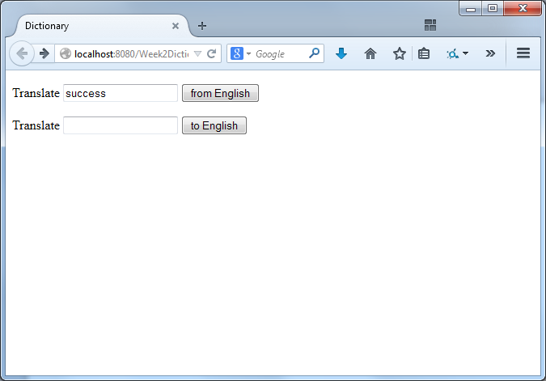
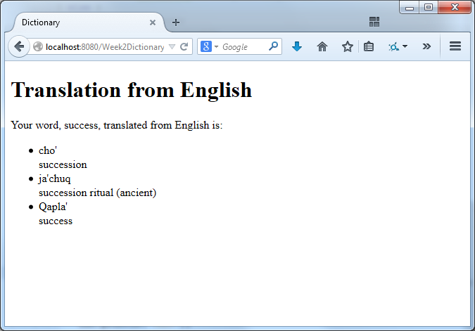
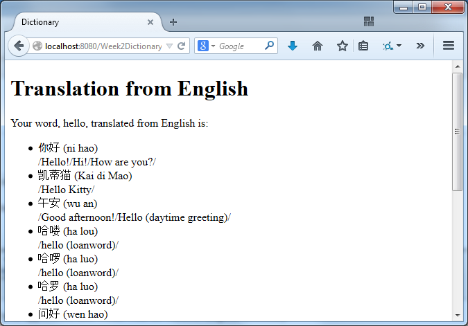

This exercise is very advanced. It is intended to challenge students who feel confident with Java.
This exercise is optional. Please don't feel pressure to do it if you are still trying to catch up with Java.
The objective is to create a web application to look up translations of words in two languages.
Dictionary Files
You can download two dictionary files: a small Klingon-English dictionary and a large Chinese-English dictionary.
The files have been converted from original dictionaries by the Klingon Pocket Dictionary and CC-CEDICT project. The original dictionaries have a CC-By-SA license and so these transformations are subject to the same license.
The files have a simple format: one line of the foreign language followed by one line containing the matching English definitions.
Why?
Klingon is a fake language invented for the Star Trek television series. I've chosen it because it has a small dictionary and does not require any special fonts or characters.
Chinese is a real language spoken by 1100 million people. I've chosen it because it has a large dictionary file and because it does not use the English alphabet.
The Challenge
Your challenge is to create a web-based dictionary. Users should be able to look up a word in one language and see the result in the other language.
I suggest starting with the Klingon-English dictionary. It is smaller and easier.
Here's one idea about how you might make it look:

Then, when the user clicks the button, they will see this:

Note: There is no Klingon word for "hello". You'll find lots of other words that don't exist in Klingon.
Once you've got that working, see if your application also works with the Chinese-English dictionary.

If the Chinese characters appear garbled, you may have character encoding issues. UTF-8 is an excellent encoding for international text. The Chinese-English dictionary is in UTF-8, but be sure that you are reading it with the UTF-8 character encoding and that the browser knows that you are sending characters encoded using UTF-8.
Hints
Are the dictionaries small enough to fit into memory? Can it be loaded into memory during Servlet initialization?
Some classes that may help with reading the file:
java.io.FileInputStream (reads bytes from a file)
java.io.InputStreamReader (reads characters from an InputStream)
java.io.BufferedReader (reads lines from a Reader)
Don't worry about the inefficiency of scanning the entire dictionary entry-by-entry for every request. Your computer is very fast.
Some other helpful functions:
text.toLowerCase() (converts text to lower case - e.g., if you'd like to make the search case insensitive)
text.contains(substring) (checks to see if the substring appears inside the text)
Going Even Further
Can you make it show the user a history of recent requests?
Can you create a web.xml file to store the dictionary filename, rather than hard-coding it in Java? To create the web.xml file, create a new file and in file type screen, look in the the "Web" category for the "Standard Deployment Descriptor (web.xml)". The tag is
How fast is each request handled? What could you do to make it faster? (You don't need to implement this -- but speculate about the possibilities)
Is your application thread-safe? Could it deal with many simultaneous users? (Your application probably is already thread-safe but think about it to convince yourself)